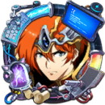

Discord
Оформление сервера и ведение сервера.
Дизайн и подготовка материалов для публикации.
Поиск фан-артов.
Создание журнала BN.
Идеи для Модов и Клип Артов.
Оформление Комиксов.
Сайт
Дизайн всего сайта.
Создание базы Личных скилов.
Оформление таблиц Ковки, Личного снаряжения.
Мелкое редактирование таблиц.
Подготовка изображений чибиков и в полный рост для Героев, а так же других изображений для работы сайта.
Баннеры для календаря.
Ютуб
Запись новостей и закадровый голос.
Подготовка слайдов.
Оформление канала.
Главный редактор всея BN«Я это еще не прогал (-_-)»
Discord
Адаптирует авто перевод с китайского и русского (игрового) на человеческий.
Заведующий Календарем Баннеров, Навыками Ковки, Личным снаряжением.
Собирает Героев в человеческий вид для каналов Признания и Скин галереи.
Ответственный за перенос английского первова в комиксы.
Помощь в определении артов из игры.
Находит все файлы для инсайдов и журнала BN. И программы которые смогут их открывать.
Следит за всеми новостями, куда смог дотянуться. и т.д.
Сайт
Единственный программист BN. и т.д.
Редактирование всех созданных таблиц и названий файлов.
Оценка дизайна сайта.
Перевод всех данных на английский язык.
Ютуб
Пишет текст для Обзоров героев.
Монтирует все видео на канал.
Сводит звук, видео, и слайды.
Гуру самых каверзных заданий«Я что сделал задание слишком быстро?»
Discord
Глобальная помощь в определении человеческих названий артов из игры.
Подготовка данных и упаковка их в таблицы о Ковенантах.
Подготовка и сортировка Баннеров, расходников и декора для журнала BN
Сортировка скинов.
Сайт
Создание базы общих скилов.
Подготовка, сортировка, наименование иконок личных и общих скилов.
Подготовка и сортировка иконок снаряжения.
Заполнение таблицы классов героев и бонусов Сердечных уз.
Создание базы бондов.
Адаптация русского (игрового) на человеческий для талантов.
Оценка дизайна сайта.
Заведующий по таблицам«Докладываю о проделанной работе!»
Discord
Ответственный по лайкам.
Помощь в определении артов из игры.
Сайт
Подготовка данных и упаковка их в таблицы для страниц:
Героя, Общего снаряжения, Солдат.
Помощь Gerion в сортировке иконок классов.
Помощь в подготовке иконок личных скилов, снаряжения.
Участие в группе опроса для составления билдов развития героя.
Ютуб
Преображение авто перевода в красивое повествование Врат Судьбы Элиссы.
Гуру исчезновения«Не боись босс. Сделаем в лучшем виде!»
Discord
Заставляет исчезать буквы и логотипы для вас( Обои и комиксы)
Раздевает героев и создает интересные горячие моды.
Сайт
Участие в группе опроса для составления билдов развития героя.
Создатель горячх модов«Вы очень помогли мне найти нужные изображения, а я рад помочь вам.»
Discord
Специалист по предотвращению появлению в канале фан-арт героев не из Лангриссер
Раздевает героев и создаёт интересные горячие моды
Сайт
Работал над максимальными статами для снаряжения

Британский переводчик«Сделаю ночью. Надеюсь тебе понравится!»
Discord
Переводит комиксы с китайского на английский
Самое милое солнышко!«У нас всё обязательно получиться. Я верю!»
Discord
Помощь в определении артов из игры.
Оценка дизайна сайта.
Помощь Loules в создании базы по ковенантам
Сайт
Помощь Loules в создании базы общих скилов.
Помощь в подготовке и сортировке иконок личных и общих скилов.
Помощь Loules, финансирование бонусов 4,7 уровня сердечных Уз.
Помощь Loules в адаптации русского (игрового) на человеческий для талантов.
DiscordУдобен для тех, кто хочет узнавать о горячих новинках самым первым. Где угодно и когда угодно.
Фан-арты на любой вкус
.png в лучшем качестве прямо из игровых файлов.
Так же мы публикуем официальные обои, комиксы
на русском.
Ну и конечно же в дискорде вы можете пообщаться с нами
*Сервер ведеться на двух языках, пожалуйста, просмотрите ролик, чтоб точно получить доступ к каналам. Banner News Server
YouTubeПодходит для тех, кто предпочитает не только смотреть, но и слушать обо всём, что происходит на китайском сервере.
Никакой воды. Максимальная квинтэссенция пользы Новостей Китая.
А вот в Обзорах мы познакомим вас с героем на хлебушкином языке. А самое вкусное - выбор тянуть его или нет, мы оставим для вас.
Выбирайте тот формат новостей, который вам больше нравится!


 PaiMiko
PaiMiko


 YouTube канал
YouTube канал